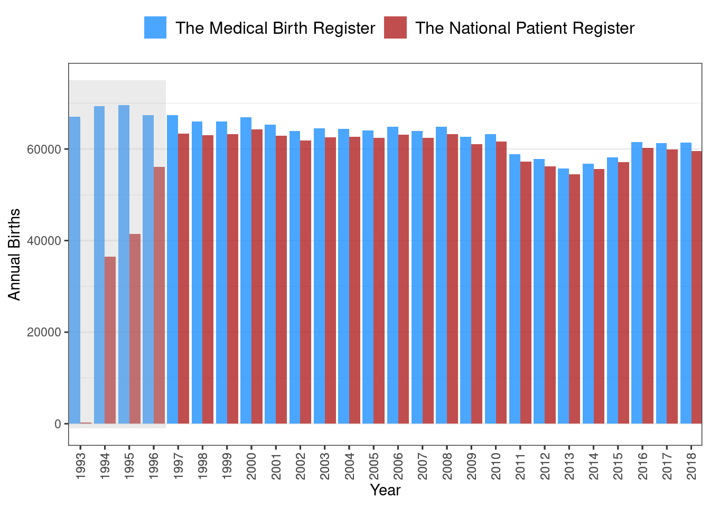

5 Discussion of methods
Before discussing the methodological design of the studies in the dissertation, this chapter first discusses the algorithm design choices made in the OSDC and the RSCD in light of discoveries made during development, implementation and validation of the classifiers.
5.1 Design of diabetes classifiers
Using data from general-purpose healthcare registers to classify diabetes cases and their specific diabetes type has several limitations. This section discusses the challenges identified during the development and implementation of diabetes classifiers in this PhD project prior to the validation performed in study I. The validation study design is discussed in Section 5.2 and its results are discussed in Chapter 6. Future perspectives of register-based diabetes classification are adressed in Chapter 8.
5.1.1 Approaches to censoring gestational diabetes mellitus
In an early version of the OSDC, we discovered that when using all the available data on GLD purchases, including the earliest years of the National Prescription Register, a substantial proportion of the individuals classified as having T1D had no purchases of insulin during the previous year (around 8% of the T1D population in most years). This seemed unlikely from a clinical perspective. When exploring these cases among participants in the National Health Survey, we found that none of them reported having diabetes in the data, although a few reported having previously had diabetes (data not shown). This led to the decision to correct diabetes type on the index date in cross-sectional studies.
However, pursuing this issue further showed that most of these cases were young women with diabetes onset before 1997, which might indicate that censoring of GDM was insufficient during this period of time. Censoring of GDM relied on the clinical obstetric coding recorded in the National Patient Register to identify individual pregnancy windows. Therefore, a rudimentary validation of the number of births registered by codes in the National Patient Register against the number of annual births recorded in the Danish Medical Birth Register1 was attempted. This showed that the clinical obstetric diagnosis codes use to capture births in the National Patient Register was indeed lacking in the first few years after the adoption of the ICD-10 coding system in 1994. However, it appeared to be sufficient from 1997 onwards, as shown in Figure 5.1 (note the gap in annual births between the two sources during 1993-1996 highlighted in grey). This led to the decision to restrict inclusion from prescription data to 1997 onward.
Any algorithm censoring GDM by using obstetrical codes from data prior to 1997 in the National Patient Register is likely to include false-positive diabetes cases among women. The RSCD censors GDM based on hospital diagnoses of GDM, but it ultimately manages these old cases (and other potentially misclassified cases) by retrospectively excluding individuals without any inclusion events in the 10 years preceding a given index date. While such a mechanism solves this issue in a cross-sectional study, it may be problematic for study designs with dynamic index dates (e.g. longitudinal studies with index dates at the time of diabetes onset are not possible).
5.1.2 Approaches to censoring polycystic ovary syndrome
In Denmark, women with PCOS are diagnosed and treated mainly in the primary care sector, and therefore these cases are not registered in the Danish National Patient Register. Metformin, a GLD, is used in the treatment of PCOS, and this may lead to inclusion of false-positive diabetes cases among women treated with metformin. As PCOS affects mainly young women, a possible solution can be to censor metformin purchases among women below an arbitrary age cut-off.
In OSDC, we adopted a cut-off of age 40 years, which has previously been used in the Danish National Diabetes Register.2 We also censored metformin purchases in women when the indication code of the prescription suggested that it was for PCOS. This approach may over-censor purchases among younger women, but we expected this to be a minor issue as most of these patients should be included based on HbA1c data instead. Some women may be treated for PCOS with metformin after the age of 40 years. Unless this was extremely rare, these were unlikely to be censored correctly, as the data on the indication codes contributed only very few cases of censoring.
The RSCD took a very different approach to identifying PCOS cases and censoring metformin purchases; it used data on purchases of contraceptives for the treatment of PCOS and any diagnoses of PCOS in the Danish National Patient Register. This approach provides an age-agnostic censoring criterion. As contraceptives are the first-line treatment drugs in the guidelines for PCOS, metformin is unlikely to be prescribed for PCOS without these. However, these contraceptives are also used in women without PCOS, which holds a risk of over-censoring women with T2D taking these contraceptives without having PCOS.
5.1.3 Approaches to censoring other sources of false inclusions
Despite much of the data collection being automated, the health registers are ultimately subject to human error. Thus, entries into the data may be erroneous and lead to false inclusions by the classifier (e.g. a prescription for GLD intended for another patient may be written and purchased by an individual without diabetes or a wrong diagnosis may have been recorded by a hospital physician). In the OSDC, diabetes diagnosis was defined at the second occurrence of an event across any of the four types of inclusion events. This approach was taken to account for errors in the register data and to comply with the HbA1c-testing recommendations from the World Health Organization and clinical guidelines, which recommend repeated samples before diagnosis.3,4 The drawback of this approach was the potential delay of inclusion after diabetes onset, particularly in the years before HbA1c data was available.
As previously mentioned, the RSCD retrospectively excludes individuals without any inclusion events in the 10 years preceding a given index date. This approach avoids unnecessary delay, but it accumulates 10 years of falsely included cases on any given index date.
5.1.4 Approaches to classification of diabetes type
With no accurate, population-wide marker of diabetes type available, researchers are forced to using indirect markers to classify diabetes type from register data. Thus, algorithm design decisions are based on assumptions, which may qualify as so-called expert clinical knowledge, and these come with benefits and drawbacks. For example, for type-classification in the OSDC, we chose to omit diagnoses from surgical departments, as we assumed that diagnoses from medical departments, particularly endocrinology departments, would be more accurate as these departments provide care specifically for T1D and T2D.
In the OSDC, we deliberately chose to make classification of T1D cases more restrictive compared to T2D. This choice was made because the T1D population is much smaller than the T2D population and therefore more vulnerable to bias from misclassification, while the T2D population is more robust due to its larger size. The algorithm specifying diabetes type reflects this, as all cases of T1D must pass separate checks on medication purchases and hospital diagnoses, and failure in either check results in classification as T2D (see Figure 4.2).
As previously mentioned, around 10% of T1D cases in the OSDC had purchased non-insulin GLD at one or more points in time. In the RSCD version 1.0, which was implemented and validated in the first study of this PhD project, these cases would all be classified as T2D and omitted from the T1D population, thereby lowering the sensitivity of T1D classification. Recent revisions of the RSCD addressed this by allowing cases with non-insulin GLD purchases in the first year after onset of diabetes to be classified as T1D.5
The concordance was high between the two algorithms in the classification of diabetes of any type vs. no diabetes. The different approaches to classifying diabetes type is likely the main cause of the performance differences observed between the two algorithms.
5.1.5 Incidence and demographic characteristics of register-based diabetes cohorts
Both the OSDC and the RSCD depend on data sources with varying duration of data coverage. In addition, methods to diagnose diabetes have changed in the period covered by the data, which leads to spikes in the incidence of diabetes inclusions, as shown in Figure 5.2. Both classifiers show three incidence spikes:
- 1995/1997: The year after incorporation of prescription data.
- 2011: The year after HbA1c becoming the diagnostic standard.
- 2016: In the OSDC, this spike is not surprising as this was the year after HbA1c data was made available from the last of the five Danish regions. The reason for the increased incidence in the RSCD is less clear, but it might indicate that this is not a spike, but rather the end of a plateau that followed after the previous spike in 2011.
{kind=link}
The different approaches to censoring between the classifiers affect the inclusions, which is evident in the distribution of the age at inclusion of each sex, as shown in Figure 5.3. For men, where no censoring of GDM nor PCOS is necessary, age at inclusion of T2D is normally distributed and similar between the two classifiers. For women, however, this distribution differs between the classifiers. In the OSDC, the age-based censoring of PCOS results in a spike of T2D cases included at age 40 years old. In the RSCD, the distribution is left-skewed by women included before age 40 years.
{kind=link}
As discussed previously, we expected the addition of HbA1c data in the OSDC classifier to compensate for the over-censoring of metformin prescription data. In density plots of age at inclusion stratified by calendar year period, the observed spike in T2D among women at age 40 years appeared to be due to cases with onset during calendar years with partial or no coverage of HbA1c data, as shown in Figure 5.4. Before 2016, when HbA1c data was not available from all regions of Denmark, a spike of inclusions is seen for women with T2D included at age 40 years. This spike is absent in the subsequent years, but the distribution is slightly skewed with a plateau in the age range 40-45 years. This is likely a residual effect of women in this age range having been prematurely included in the preceding years. In plots of the RSCD classification, the distributions of T2D and T1D are more skewed among individuals included after 2016 than before 2016. Indeed, among cases included during the most recent years, the RSCD T1D and T2D distributions appear bimodal, a visual sign of cross-contamination, which may indicate that the RSCD is more prone to misclassifying cases during the first years after onset/inclusion.
While the different design approaches between the two classifiers resulted in differences in incidence and demographic characteristics between theircohorts, the performance in classification of prevalent diabetes was comparable, as described in Chapter 4, and the differences were not specific to T2D in women, for whom the design of the algorithms differed the most.
{kind=link}
5.2 Study designs
All three studies in this dissertation were designed as observational, cross-sectional studies based on prospectively collected register data covering the entire adult population in Denmark. The first study also incorporated questionnaire data from the Health in Central Denmark survey to serve as the gold standard for validation.
The cross-sectional design is useful for assessing the prevalence of an outcome or exposure at a particular point in time and any associations between them. Compared to a longitudinal design, a major limitation of this design is the inability to establish temporal or causal relationships between exposures and outcomes. Thei limitation was not a concern in the context of this dissertation, because the aim was to map risks in migrants (rather than infer causality) and because the exposure (migrant origin) was defined at birth, i.e. long before assessment of any of the outcomes.
The use of nationwide register data enabled the largest possible sample size and provided sufficient statistical power for analyses on minority groups. The drawback was that the data was not collected nor validated for this specific research purpose.
Factors affecting the generalisability of the findings of this dissertation are discussed in the following sections.
5.3 Internal validity
5.3.1 Selection bias
In study I, validation was performed in a population of respondents to a survey; a design that is prone to selection bias. Survey invitations were conditioned on being aged 18-74 years and on being classified as a diabetes case by the OSDC or being sampled into a group matched by sex, age and municipality. The choice to subsample OSDC diabetes cases when deriving the study population compensated for the oversampling of OSDC cases compared to non-cases in the survey population, but this did not change the other characteristics in the survey population. As a result, the study population contained fewer women and a skewed age distribution compared to a random sample of the general population and also a higher diabetes prevalence.
The accuracy of the classifiers may be different among individuals older than age 75 years, and the predictive values will vary depending on diabetes prevalence. However, supplementary validation analyses performed in the National Health Survey, which contains a representative sample of the general adult population, provided results similar to those obtained in the Health in Central Denmark survey. This does not rule out selection bias, however, as the data in both surveys covered only the Central Denmark Region, and the supplementary analyses were limited to classification of diabetes of any type vs. no diabetes (see Appendix A).
In addition to the distribution of survey invitations, non-response among invitees may also be a source of selection bias as the analyses were restricted to respondents. However, several factors suggest that this bias was limited; the response rates were high (>50%) in the T1D, T2D and no-diabetes groups, and the three groups shared similar non-response patterns.6
The unique strength of studies II and III was the large study population with data on socio-demographic characteristics, healthcare services, biomarker levels and pharmacological treatment for an entire nation, which minimises the risk of selection bias. However, the statistical analyses were performed as complete-case analyses, which omits individuals with missing data from the analyses and may induce selection bias. To avoid this, individuals with very short residence durations on the index dates of the studies were excluded to allow time for the data to be captured correctly. In addition, the variables included in the analyses were chosen to minimize missing data, e.g. we omitted education level from the analyses due to a substantial proportion of migrants missing this data.
Laboratories from different regions of the country did not contribute data for the same length of time prior to the index dates of the studies. Migrant groups were distributed unevenly across these regions. This could potentially have induced a differential bias on biomarker levels between migrant groups if biomarker levels differed between individuals with a recent sample and those with only an older sample. In study II, this potential bias is likely to be minor, however, since most of the study population underwent yearly biomarker monitoring prior to the index date. Analyses of biomarker levels and pharmacological treatment in study II - and all analyses in study III - were conditioned on individuals having an HbA1c or/and LDL-C level recorded, and this selection could potentially induce a bias. However, even in study III, which excluded individuals without a samples in the three years prior to the index date to minimise information bias, this excluded no more than a few percent of the study population, an indication that substantial selection bias was unlikely.
In study II, the analyses on pharmacological treatment were conditioned on individuals still being alive and residing in Denmark at the end of the following year, which could have induced selection bias. However, the alternative, i.e. leaving these individuals in the analyses, would have the potential to induce substantial bias, as any individual dying or emigrating before their first drug purchase in the year would have had their outcome misclassified if being in pharmacological treatment prior to the index date, which was most likely (the majority of individuals with an indication for treatment did receive treatment in the year after the index date). In study III, the analyses were not performed in a population with a strict indication for any given treatment. Therefore, we expected outcomes to be more rare, and we did not condition on being alive and residing in Denmark for the entire year after the index date. This may have lead to underestimated user-prevalences due to deaths and emigrations in the first months after the index date, but this is unlikely to be a major source of bias.
5.3.2 Information bias
In study I, the gold standard for validation was self-reported diabetes type, which is an imperfect gold standard that may be prone to recall bias. As age at onset in the true T1D population was much lower compared to age at onset in the T2D population (which was an order of magnitude larger in size) we would expect the mean age at onset of diabetes in the self-reported T1D population to increase substantially if the self-reported diabetes type was inaccurate. However, the distribution of self-reported age at onset of T1D was similar to previously reported estimates.7 This indicates that the self-reported data on T1D was accurate overall. Although inaccuracies in the self-reported diabetes data cannot be ruled out, especially in groups with low health literacy (e.g. migrants),8 we expect these to be minor and non-differential between the two register-based classifiers. Thus, any inaccuracies would result in bias towards the mean: an underestimation of performance in both classifiers and an attenuation of differences between them.9 Indeed, a substantial proportion of self-reported T1D cases among migrants in our study may have been true T2D cases, as the proportion of self-reported T1D was higher in migrants than in native Danes, which contradicts previous findings.10,11 This does not imply that the classifiers perform worse in migrants, only that the ability to validate the classifiers in these groups is limited in this study design.
In light of the results from study I, the OSDC classification of T2D used to define study populations in studies II and III was found to be highly valid. The quality of the register data is likely to be very high overall, as it is captured automatically and used in civil registration, billing of public health care services, reimbursement of prescription drug purchases, and for clinical use and administrative purposes in hospitals. The biomarker data is captured automatically by the clinical databases and this data is likely to be accurate, as clinical laboratories are compelled to uphold quality assurance standards.12 Thus, the outcomes defined in studies II and III through billing records from primary care (monitoring), biomarker samples (monitoring and biomarker levels) and prescription drug purchases (pharmacological treatment) were likely to be valid. However, migrants tend to have more healthcare contacts than native Danes13 and may be more likely to receive testing for HbA1c, LDL-C and UACR that does not represent routine diabetes monitoring. While we expect this effect to be minor, it might have overestimated the quality of monitoring in migrants compared to native Danes. In addition, while guidelines recommend that screening for diabetic foot to be performed by a podiatrist, GPs may also perform it. This would not be captured in the data, which may have overestimated the risk of non-fulfilment of this aspect of monitoring in groups where screening for diabetic foot is more often performed by the GP. Migrants, being poorer than native Danes, may be more likely to have screening for diabetic foot performed at the GP if they are deterred from using podiatrist services due to the associated financial barriers. This would lead to exaggerated risks in migrants if screening for diabetic foot by GPs is considered equal to podiatrist screening in terms of care quality.
In study III, the lack of data on active ordinations of GLD meant that an indirect definition based on prescription purchases had to be used. The greatest challenge in this regard is managing patients switching from one type of GLD to another, which - in a fixed window of prescription purchase data - is hard to discern from patients adding an additional type of GLD to their treatment. If a drug switch is misclassified as the use of two GLD types rather than one, user-prevalences will be overestimated. In contrast, patients purchasing large amounts of GLD at once may not need to make another purchase during the data window despite being users, which will lead to underestimation of user-prevalences. This is a particular problem since metformin, the most commonly used GLD type in Denmark, is available for purchase in package of 400 tablets, which will last the user for several months - even at maximum daily dosage and complete adherence to medication.
Our definition of GLD use - requiring two purchases in a year, and at least one in the last six months of the year - attempts to limit the potential of both types of errors. By requiring two purchases of each GLD, we expect to have accounted for most cases of switching/discontinuation due to side-effects, which is likely to occur during use of the first purchase. In addition, by requiring a purchase to be made within a six month window, the potential for GLD switching is minimised, due to the low likelihood of switching from one GLD to another (and making two purchases of the new drug) in such a short window of time.14,15 Furthermore, this user-definition is likely to correctly identify users of metformin, even users of sub-maximal dosages purchasing in bulk. Naturally, we may have omitted individuals purchasing very large amounts of a GLD type at once, and may incorrectly have identified patients discontinuing/switching from one type of GLD to another as being users of both types if the switch happened during the last six months of the year. However, we do not expect this to have influenced our findings substantially, neither in any of the individual GLD types nor in combination therapy.
Alternative definitions of use could have pursued a more restrictive identification of drug discontinuation/switching by using distinct rules for metformin-use, or by requiring repeated purchases of each GLD during subsequent time-windows. The drawback of the latter is the inability to allow for GLD types to be added during subsequent time windows, while the former is unlikely to provide enough improvement to justify the added complexity (unless using a definition with a shorter time-frame than ours, e.g. requiring purchases within a three-month window).
The exposure definition of migrant origin is based on systematic registrations by the immigration office, which are likely to be highly valid. While this classification based on country of origin is able to identify distinct ethnic minorities better than definitions based on race,16, it does not fully capture ethnic groups within each country (e.g. ethnic Turks vs. ethnic Kurds in the Turkey group) or pooled category (e.g. Moroccan vs. Afghan migrants in the Middle East group). This may lead to underestimation of disparities due to bias towards the mean if an origin group contains multiple ethnic groups with opposite risk patterns.
Among variables used for adjustment, some are particularly vulnerable to inaccuracies. For example, data on hospital diagnoses may be vulnerable to inaccuracies and errors, as these data potentially rely on registrations entered by a single doctor (possibly sleep-deprived and pressured for time), who may not prioritise accuracy of the registration over more pressing clinical concerns. In studies II and III, hospital diagnoses of macrovascular complications were used as adjustment variables, and these primary diagnoses had previously been validated for peripheral arterial disease, stroke and cardiovascular disease with PPVs between 75% and 99%, which was sufficient for their purpose in our studies.17–19
In contrast, to the best of my knowledge, register-defined duration of diabetes has never been the subject of validation in any previous studies. Supplementary analyses in study I indicated that register-classified diabetes duration may be biased among individuals with T2D. However, this bias seems unlikely to be differential between migrant groups and the outcomes investigated in studies II and III, although it might have lead to an underestimation of disparities due to bias towards the mean.
5.3.3 Confounding
None of the studies in this dissertation attempted to establish causation. Nevertheless, potential confounding of the observed risk disparities between migrants and native Danes deserves to be discussed since migrant origin, socioeconomic position, lifestyle and healthcare utilisation are intertwined beyond the information captured in the data. Studies II and III mapped the risks in migrants (not causal associations). However, in order to visualise and interpret disparities in a clinical and social context, the analyses were adjusted for some potential clinical and socioeconomic risk factors. As the focus was placed on risk rather than causality, we did not adjust for possible differences in GP behaviour, which is obviously an important factor in care provision. Additionally, the factors adjusted for may not fully capture the clinical status of a patient, and the distributions of hypertension, smoking and diabetic complications beyond macrovascular complications and kidney disease are likely to differ between migrant groups and the outcomes studied. However, any residual confounding of the associations is assessed to be minor, as we adjusted for several key clinical risk factors.
5.4 External validity
5.4.1 Generalisability
In study I, both classifiers achieved excellent overall accuracy, despite their different approaches to classifying diabetes type, handling potentially erroneous data and censoring PCOS and GDM cases. This might indicate that the quality of the underlying data is more important for accurate classification of diabetes type than the specific technical design. If this is the case, the overall performance estimates are likely to be generalisable to other diabetes definitions based on Danish register data from similar time periods and with comparable inclusion and censoring criteria. Register-based studies set in healthcare systems of other countries may use the algorithms as a starting point. However, a careful analysis of whether a given register data infrastructure captures valid information on type-specific diagnoses, inclusion and censoring criteria is required before similar classification accuracy can be assumed.
Migrant populations differ between nations, and T2D care quality differs between nations with different healthcare systems. In addition, diabetes risks in migrants appear to be sensitive not only to the country of origin and the country of residence, but also to the socioeconomic gradient between the two.20 Thus, generalising the findings on care quality to migrants in other countries depends on several context-specific factors. Despite these limitations, it seems likely that the disparities found in migrant groups in Denmark may also be present in migrants from the same origin groups in other European countries with universal public healthcare systems. In study II, reference risks in most indicators of T2D care were similar to reports from other Scandinavian countries and the UK. This suggests that these settings are comparable in terms of diabetes care, but the levels of HbA1c and LDL-C were lower in the Danish T2D population which may limit the generalisability of our results within these outcomes.21,22
The vast majority of migrant groups were covered in the origin categories studied in this dissertation. The remaining migrants are a very heterogeneous group in terms of origin, but the overall risk patterns may generalise to these as well. The results on diabetes care from study II may not generalise to migrants with a short duration of diabetes or residence in Denmark, who were excluded from the analyses. Still, the ramifications of this are limited, since it only concerns relatively few individuals, who transition out of these states after a limited period of time.
5.5 Analyses
In study I, the great strength of the survey data was that it provided information on individuals regardless of diabetes status, which enabled analyses of all four standard validation metrics (sensitivity, specificity, PPV and NPV). This contrasts clinical audit of electronic patient records, a commonly used validation study design, which provides only an estimate of PPV. Subsampling and excluding most OSDC-classified diabetes cases from the study population may seem counter-intuitive, as it reduces the statistical power, but this was necessary to provide unbiased validation estimates. Without subsampling, the study population would have been far from representative of the target population in terms of diabetes prevalence, and it would also induce circular bias towards the OSDC classifier; among individuals with diabetes, true positive OSDC diabetes cases would be much more likely to be included in the study population than false-negative OSDC diabetes cases. Another undesirable effect of subsampling is that it may induce a random bias, but this was examined by drawing multiple samples and bootstrapping repeated analyses. The bootstrapped analyses showed that the study population sample was robust and that sampling had not induced any major random bias.
In studies II and III, the use of robust Poisson regression provided intuitive estimates of relative risk, despite most outcomes being common. While relative risk is probably the most relevant risk measure for the individual patient and the clinician providing treatment, public health planners may be more interested in disparities measured as absolute risk differences between groups.
In studies II and III, the choice of statistical models and variables for adjustment merits some discussion. Both studies presented risk estimates from three different models with different contexts: crude, adjusted for clinical variables (model 1) and adjusted for clinical and socioeconomic variables (model 2). In study II, the outcomes were closely aligned with guideline recommendations, most of which apply to all T2D patients regardless of patient characteristics. Therefore, the emphasis in study II was placed on the crude risk estimates. In study III, the outcomes were not tied to absolute recommendations, and indication for treatment depended more on the risk profile and characteristics of each individual patient. For this reason, the models were expanded to capture more clinical characteristics in study III, where the emphasis was placed on the fully adjusted estimates (model 2). Due to the very different distributions of some characteristics between migrants and native Danes (e.g. most migrant groups with T2D were much younger and had much lower household incomes), the adjusted estimates should be interpreted with caution, as they compare the risk in migrants with the risk in the most vulnerable minority of native Danes with T2D. Indeed, researchers focussing on causal inference could argue that being young and poor is a causal effect of being a migrant with T2D. Furthermore, if receiving poor T2D care quality is considered a causal effect of being young and poor, then these variables would (in a causal framework) be considered intermediary variables on the causal pathway (and adjusting for them would lead to underestimation of the association). Ultimately, the three models contribute to understanding and interpreting the risk in migrants from different perspectives, and the most relevant model will depend on the aims of the reader.